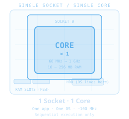
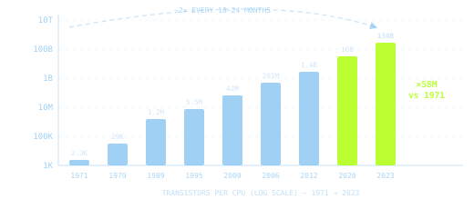
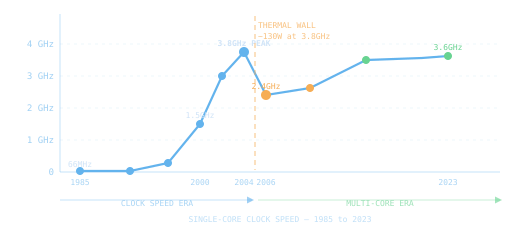
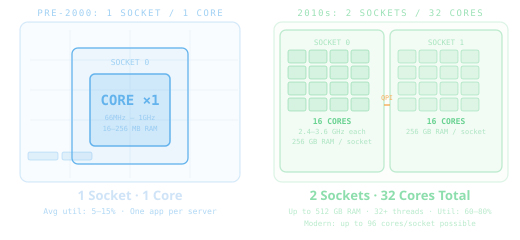
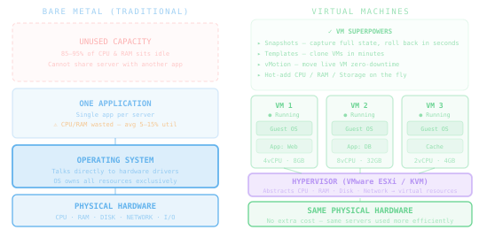
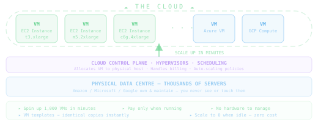

How CPUs evolved from one slow core to hundreds of parallel cores — and how Virtual Machines made it possible to use all that power efficiently.
One CPU. One core. One task at a time. And that was fine — for a while.

Gordon Moore's 1965 observation became the engine that drove 50 years of computing progress

Clock speeds couldn't keep rising — physics intervened, forcing a complete rethink of CPU design

More cores at slightly lower clock — same chip area, massively more parallel throughput

What if one physical server could pretend to be many? The hypervisor made this possible.

AWS, Azure, and GCP took VM technology, automated it with APIs, and sold it to the world

Five ideas — from single transistors to cloud computing
From 2,300 transistors in 1971 to 134 billion in 2023. From one server per app to 20 VMs per server. From weeks to provision to minutes to clone.